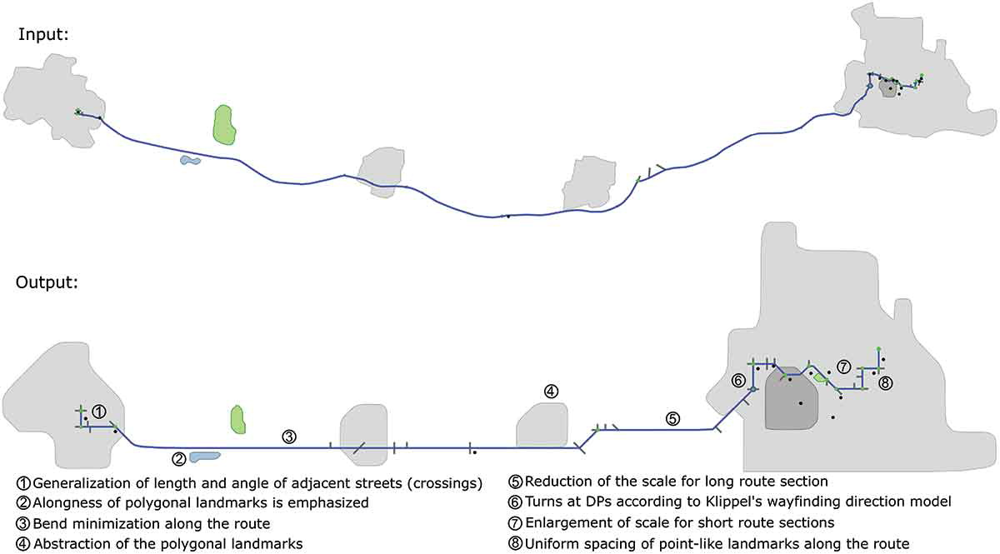
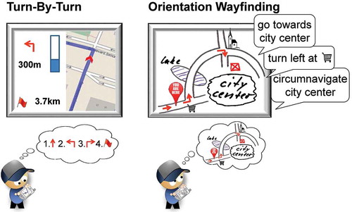

I'm a geodata visualization specialist and a geoinformatics researcher.
My focus
Data vizualization
AI - Optimization, search, and evolutionary algorithms
GIS and cartography
Responsive web design
Full stack developer

I develop algorithms for the generalization of geographic information that improves the readability of maps. (Route schematization with landmarks)
Experience
Research Associate
Institute for Geoinformatics – University of Münster
In the WayTO project, we investigate how people use maps to orient themselves while driving.
Part of the problem is to understand how different kinds of maps benefit the user.
My research topic is about algorithms for data generalization to be used in maps that facilitate usability and spatial learning.
Besides that, I was lecturer for Digital Cartography and Introduction to Software Programming. Also presented in conferences and workshops, and published scientific articles.

Wayfinding through orientation.
Oktober 2016 - July 2021
Information Technology Consultant
United Nations Industrial Development Organization
I manage several IT applications and infrastructure in the Observatory for Renewable Energy for America Latina and Caribbean. Geo-referenced information systems, the home page, a digital library, and Server maintenance (Red Hat Linux).
April 2012 - July 2014
Internship
IT & Research
I have almost three years of internship experience in companies of different business sectors: private, research institutions, government, and ONGs.
July 2006 - April 2010
Education
University of Münster, Germany
PhD candidate - Institute for Geoinformatics
Lecturer for Digital Cartography. Lecturer for Introduction to Software Programming. Participation in Conferences and workshops. Publication of scientific articles. Development of visualization algorithms. Development of methods for the evaluation of maps.
October 2016 - November 2021
University of Münster, Germany
Universitat Jaume I, Spain
Universidade Nova de Lisboa, Portugal
Master of Science in Geospatial Technologies
Erasmus Plus Granted Master in thress European Universities. Courses: Programming, Spatial databases, Software engineering, Spatial analysis, Spatial data visualization, Multimedia, Remote sensing applications, Web and mobile GIS, Introduction to GIS, Spatial data infrastructures, Digital Cartography, Reference Systems, Usability, Project management.
September 2014 - April 2016
University of Brasilia (UnB), Brazil
BS in Computer Science
Object Oriented Programming, Systematic programming, Database, Data Structure, Information Systems, Linear Algebra, Analysis of Algorithms, Introduction to Graph Theory, Automata and Computability, Network Management, Artificial Intelligence, Construction of Multimedia Pieces, Probability and Statistics, Transportation Planning.
I'm an enthusiast of the systems involved on Earth. Its geography and cultural differences are fascinating.
I have a particular interest in climatology, history, and geopolitics.
That's why, when I have free time, I'm traveling looking for new cultures and waves to surf.